l系统信息
“系统信息”面板展示当前NGFW设备的产品型号、产品序列号、软件版本、系统名称、系统时间、运行时长、高可用性状态和Build版本，界面如下图所示。点击面板中的蓝色字体内容（如系统名称、系统时间、高可用、Build版本），可跳转至相应的系统信息修改界面进行修改。
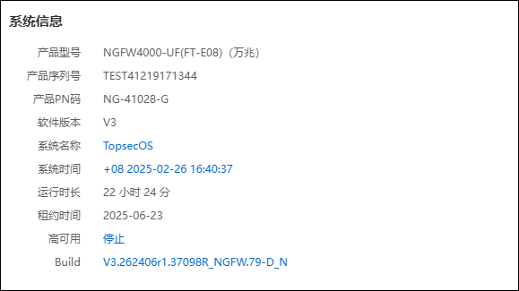
l设备状态
“设备状态”面板显示NGFW的CPU、内存和磁盘的使用率，以及风扇状态、系统温度和电源状态，如下图所示。点击面板中的蓝色字体内容（如CPU、内存、磁盘），可跳转至相应的设备状态信息展示界面查看设备信息。
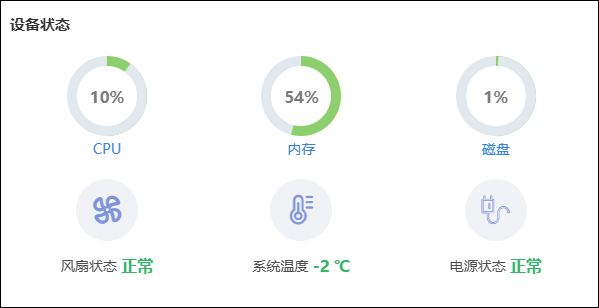
l整机流速
“整机流速”面板以曲线图显示NGFW的流速，包括上行流速、下行流速和总流速。横轴表示时间，纵轴表示流速，将鼠标指针移动到曲线图上，可以查看对应时间点的具体流速数据，如下图所示。
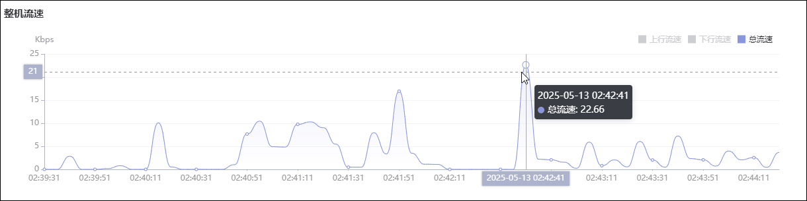
l攻击趋势
“攻击趋势”面板以趋势图展示高、中、低级别的攻击随时间的变化情况，横轴表示时间、纵轴表示攻击次数。通过面板右上角的时间切换下拉框可切换统计时间段（可选时间段包括最近1小时、最近1天、最近1周、最近1月）。将鼠标指针移动到趋势图上，界面可展示某时间高、中、低级别攻击次数，如下图所示。
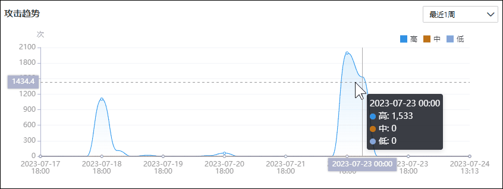
l接口信息
“接口信息”面板显示NGFW所有物理接口和扩展卡的信息。将鼠标指针移动到某接口图标上，可展示该接口的基本信息（如接口名称、速率和状态），如下图所示。
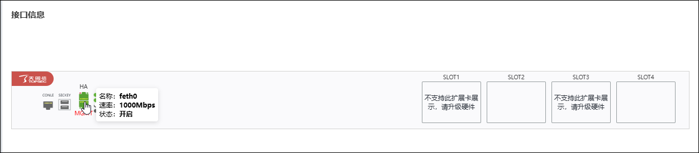
l攻击源
“攻击源（TOP5）”面板展示攻击次数排名TOP5的攻击源信息，以柱状图表明攻击源的攻击次数，柱状图上方以国籍图标展示该攻击源所属国家。通过面板右上角的时间切换下拉框可切换统计时间段（包括最近1小时、最近1天、最近1周、最近1月）。将鼠标指针移动到攻击源柱状图上，可查看对应攻击源的详细攻击次数，如下图所示。
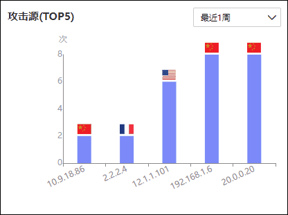
点击攻击源攻击次数柱状图，或者点击攻击源所属国家的国旗图标，可查看攻击源详细画像（包括攻击者信息、攻击链分析、安全事件列表、受害者列表），如下图所示；将鼠标指针移动到国旗上，界面可展示攻击源IP和所属国家。
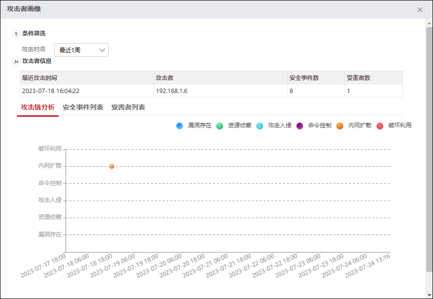
l安全事件类型（TOP5）
“安全事件类型（TOP5）”面板展示了攻击次数排名TOP5的安全事件。通过面板右上角的时间切换下拉框可切换统计时间段（包括最近1小时、最近1天、最近1周、最近1月）。将鼠标指针移动到安全事件柱状图上，可查看对应安全事件的具体数量，如下图所示。
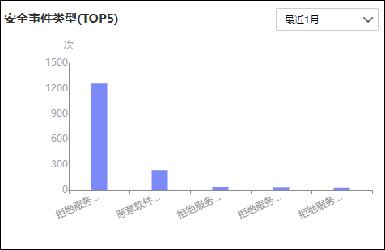
点击表示某安全事件的柱状图，可跳转至安全事件界面查看对应安全时间的详细信息，如下图所示。
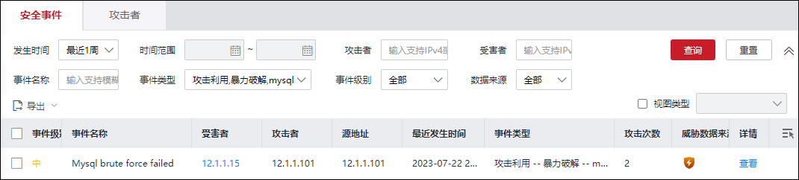
l资产概况
“资产概况”面板展示资产统计信息，包括遭受威胁资产总个数、漏洞资产个数、基线异常资产个数、服务器类型资产个数以及全部类型资产个数（小箭头展示新增资产数），如下图所示。
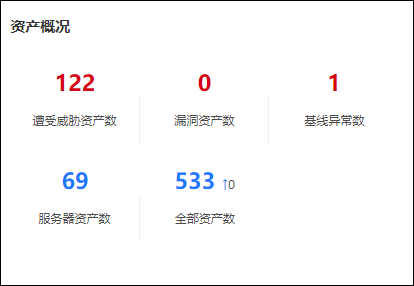
l风险资产（TOP5）
“风险资产（TOP5）”面板展示排名TOP5的风险资产信息，如下图所示。
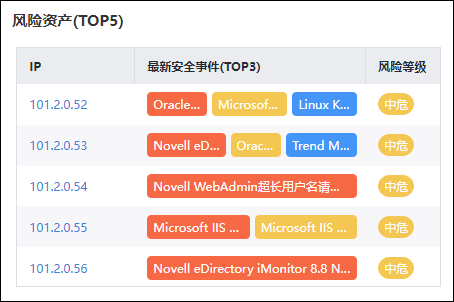
点击排名TOP5风险资产IP地址，可进入该风险资产的详情展示界面，如下图所示。
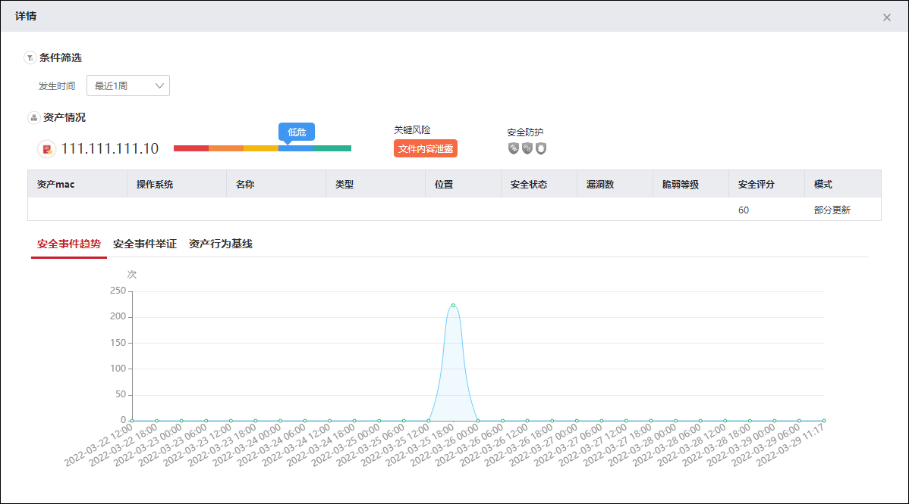
l登录日志（TOP50）
“登录日志（TOP50）”面板展示了系统最新记录的50条登录日志，日志信息包括登录时间、日志等级和系统事件，如下图所示。
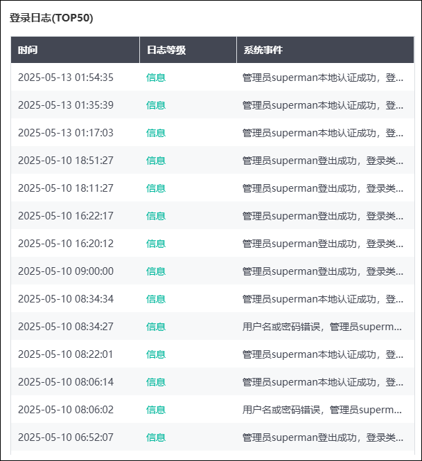
l威胁地图（受攻击统计）
“威胁地图（受攻击统计）”面板以世界地图为背景显示攻击统计信息，如下图所示。
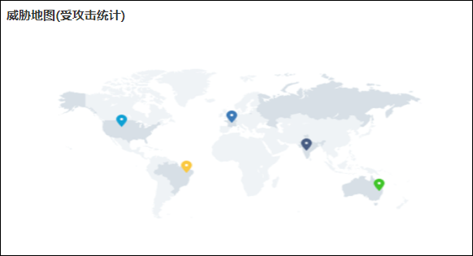
点击地图，可进入今日攻击源和受攻击地区的详细统计信息展示界面（包括：今日遭受攻击次数、攻击源/受害者的地理位置、今日安全事件TOP20、最近1小时攻击源TOP5、今日攻击趋势和风险资产统计），如下图所示。
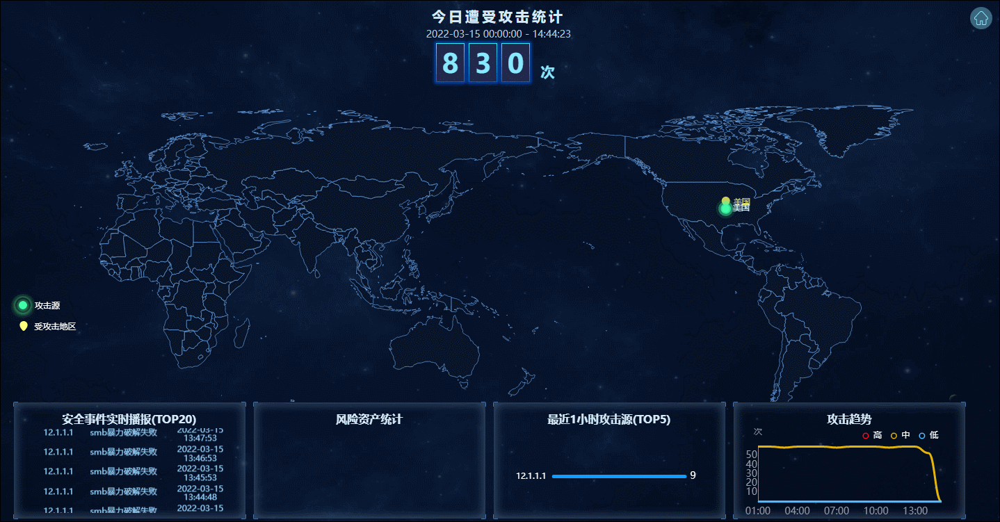
l云端新闻推送
点击界面右下角的“
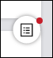
”，可查看天融信推送的云端安全新闻，包含版本更新、网安新闻和漏洞通告等，如下图所示。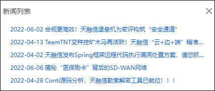
|
²系统管理功能模块开启“新闻列表总开关”，“首页”显示“云端新闻推送”功能区，有关“新闻列表总开关”的配置详见 统计开关。新闻列表显示的数据来源于云安全中心，NGFW连接云安全中心的介绍详见 云安全中心。 |